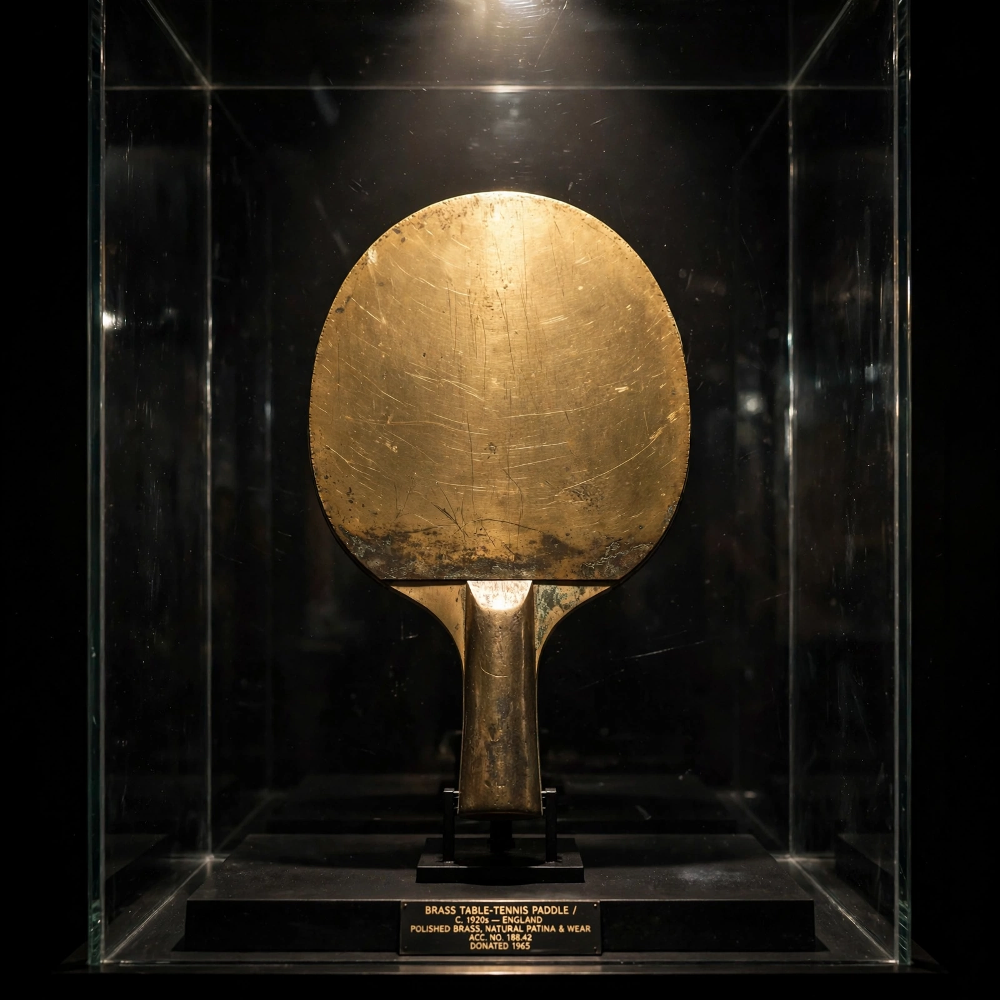
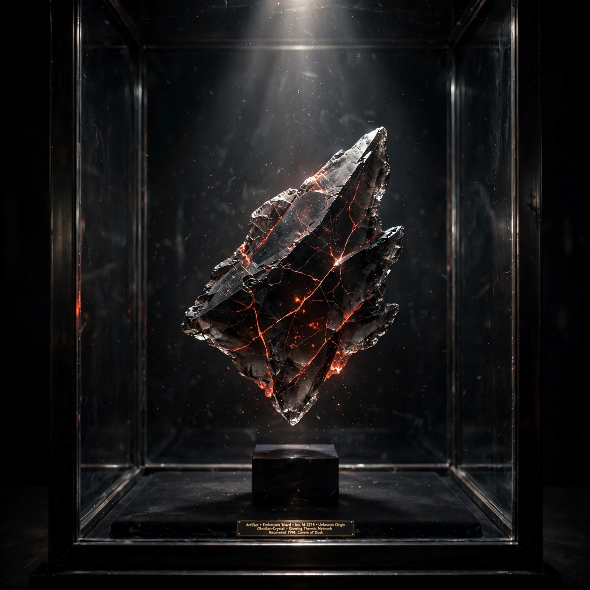

Artifacts recovered from the history of games.
Each era of the tour leaves one physical collectible behind. When the tour is complete, one of these will be chosen to become a real physical board game.

The instrument of the first rally — table tennis on a television screen, 1972. Two dials, one square ball, and the object that started everything. Cast in brass, it has not moved since the last point was scored. Some say the ball is still in play.

A crystallized fragment of a shattered invader, recovered from the orbital defense of 1978. Every kill in the defense fell to earth in fragments — this is one of them, kept. Its cracks still hold the red glow of the swarm's last descent. Handle with care: it remembers falling.